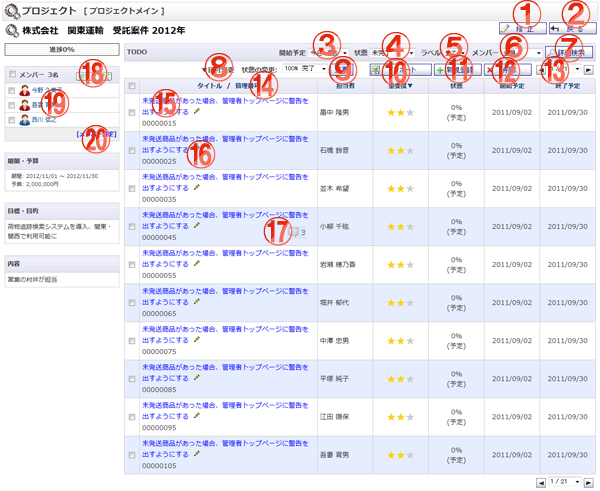

プロジェクト情報を表示する画面です。

機能説明
修正ボタンプロジェクト編集画面へ遷移します。 |
戻るボタン遷移元画面へ遷移します。 |
|---|---|
開始予定コンボTODO一覧に表示する開始予定の条件を変更して一覧を表示します。 |
状態コンボTODO一覧に表示する状態の条件を変更して一覧を表示します。 |
ラベルコンボTODO一覧に表示するラベルの条件を変更して一覧を表示します。 |
メンバーコンボTODO一覧に表示するメンバーの条件を変更して一覧を表示します。 |
詳細検索ボタンTODO詳細検索画面へ遷移します。 |
日付変更リンク日付変更ダイアログが表示され、TODO日付をシフトできます。 |
変更ボタンTODOの状態をコンボボックスで選択し、変更します。 |
インポートボタンTODOインポート画面へ遷移します。 |
新規登録ボタンTODO登録画面へ遷移します。 |
削除ボタンチェックボックスで選択したTODOを一括削除します。 |
ページコンボ・前頁・次頁ページコンボで任意のページへ、前頁アイコンクリックで前のページへ、次頁アイコンクリックで次のページへそれぞれ遷移します。 |
ヘッダタイトルクリックによって一覧のソート条件の切り替えを行います。現在ソート条件になっている項目をもう１度クリックすると「昇順」「降順」が切り替わります。 |
TODOタイトルTODO参照画面へ遷移します。 |
TODO編集ボタンクリックしたTODOの編集画面に遷移します。 |
コメントボタンTODO参照画面に遷移し、コメント一覧を表示します。 |
回覧ボタン・ショートメールボタン回覧板・ショートメールの新規作成画面へ遷移します。 |
メンバー ユーザ名ユーザ名リンクをクリックすると、詳細なユーザ情報をポップアップで表示します。マイプロジェクトの場合は表示されません。 |
メンバー設定プロジェクトメンバーID設定画面へ遷移します。マイプロジェクトの場合は表示されません。 |
表示・入力項目説明
進捗率
プロジェクトの進捗率を表示します。
期間
期間を表示します。
目標・目的
目標・目的を表示します。
内容
内容を表示します。